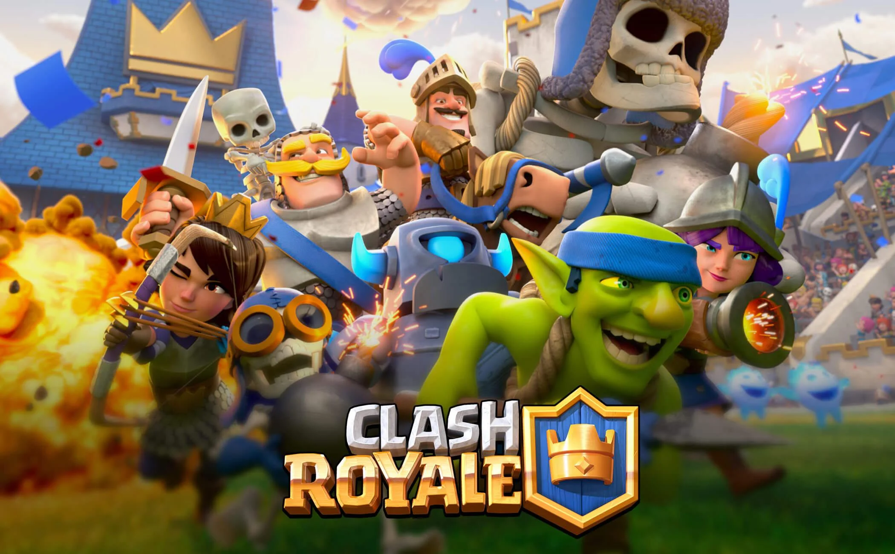

Un videojuego es una aplicación interactiva orientada al entretenimiento que, a través de ciertos mandos o controles, permite simular experiencias en la pantalla de un televisor, una computadora u otro dispositivo electrónico.
Casi ni lo recordamos, pero hubo un tiempo en que los teléfonos eran unos aparatos grandotes, instalados en la mesita del salón, con una ruleta para marcar los números y con los que no se podía hacer otra cosa que llamar. Ahora, con nuestro móvil, tenemos el mundo al alcance de la mano. Podemos hacer la compra en el súper, leer el periódico, reservar un viaje, hacer fotografías, seguir la ruta hasta una calle desconocida... y hasta pasar el rato jugando. De hecho, los juegos llegaron a los móviles mucho antes que la mayoría de las aplicaciones que ahora consideramos habituales. Eran, eso sí, juegos mucho más rudimentarios y que no tenían nada que ver con los actuales. Han tenido que pasar muchos años para que podamos cazar pokémons en las calles nuestra ciudad o luchar con extraterrestres en mundos de ciencia ficción. Pero el germen de todo aquello estaba en aquellos juegos primigenios, que demostraron que podía ser muy divertido matar los ratos muertos con nuestro teléfono. El pionero, además, es un juego que ha hecho historia. Tanto, que aún hoy sigue siendo un éxito en los modernos 'smartphones' y aparece en las listas de las 'apps' más vendidas. Es el Tetris, que la marca de telefonía danesa Hagenuk incluyó en 1994 en su modelo MT-2000. En 1997 fue Nokia la que ofreció el Snake con la posibilidad, además, de que dos jugadores se conectaran a través de un puerto de infrarrojos para jugar juntos. Eran juegos muy simples, en una fea pantalla monocroma que vista hoy parece de la prehistoria, pero sentaron las bases de un mundo -el de los juegos para móvil- que hoy mueve millones y tiene pegadas a sus pantallas a millones de personas cada día. ¿Una partidita?
grandes juego del movil de 2021
